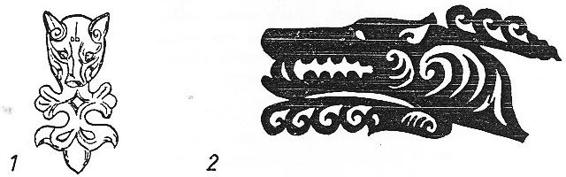
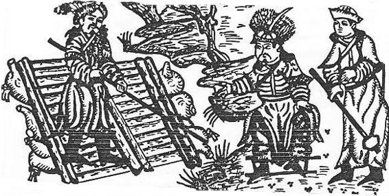
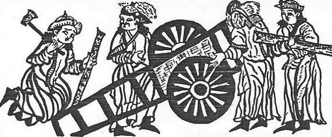
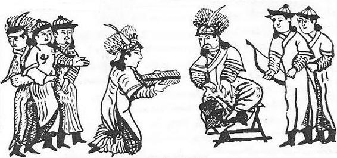

EFSANENİN BUGÜNKÜ TÜRKÇEMİZE TERCÜMESİ
| 1 |
..Olsun dediler. |
|
|
Onun resmi işte budur: |
| 2 |
Ondan sonra da yine, sevinç, neşe buldular. |
|
|
Yine günlerden bir gün: |
| 3 |
Aydın oldu gözleri, renklendi, ışık doldu, |
|
|
Ay Kağan'ın o gündü, bir erkek oğlu oldu. |
| 4 |
Gömgök, gök mavisiydi, bu oğlanın yüz rengi, |
|
|
Kıpkızıl ağıziyle, ateş gibiydi benzi. |
| 5 |
Al al idi gözleri, saçları da kapkara! |
|
|
Perilerden de güzel, kaşları var ne kara! |
| 6 |
Geldi ana göğsüne, aldı emdi sütünü, |
|
|
İstemedi bir daha, içmek kendi sütünü! |
| 7 |
Pişmemiş etler ister, aş, yemek ister oldu! |
|
|
Etrafdan şarap ister, eğlenmek ister oldu! |
| 8 |
Ansızın dile geldi, söyler, konuşur oldu! |
|
|
Kırk gün geçtikten sonra, yürür oynaşur oldu! |
| 9 |
Öküz ayağı gibi, idi sanki ayağı! |
|
|
Kurdun bileği gibi, idi sanki bileği! |
| 10 |
Benzer idi omuzu, tıpkı samurunkine! |
|
|
Göğsü de yakın idi, koca ayınınkine! |
| 11 |
Bir insan idi, fakat tüylerle dolu idi! |
|
|
Vücudunun her yeri, kıllarla dolu idi! |
| 12 |
Güder at sürüleri, tutar atlara biner! |
|
|
Daha bu yaşta iken, çıkar avlara gider! |
| 13 |
Geceler günler geçti, nice seneler doldu! |
|
|
Oğuz da büyüyerek, yahşi bir yiğit oldu! |
|
|
Bu çağda! Bu yerde! |
| 14 |
Bir büyük orman vardı, Oğuz yurdundan içre, |
|
|
Ne nehir, ne ırmaklar, akardı bu orman içre. |
| 15 |
Ne çok av hayvanları, ormanda yaşar idi, |
|
|
Ne çok av kuşları da, üstünde uçar idi! |
| 16 |
Ormanda yaşar idi, çok büyük bir gergedan, |
|
|
Yer idi yaşatmazdı, ne hayvan, ne de insan! |
| 17 |
Basarak sürüleri, yer idi hep atları, |
|
|
Zahmet verir insana, alırdı hayatları! |
| 18 |
Vermedi hiç bir defa, insanoğluna aman, |
|
|
Öyle bir canavar ki, işte böyle çok yaman! |
| 19 |
Oğuz Kağan derlerdi, çok alp bir kişi vardı, |
|
|
Avlarım gergedanı, diye o yere vardı. |
| 20 |
Kargı, kılıç aldı, kalkan ile ok ile, |
|
|
Dedi, gergedan artık, kendisini yok bile! |
| 21 |
Ormanda avlanarak, bir geyiği avladı, |
|
|
Söğüt dalıyla onu, bir ağaca bağladı. |
| 22 |
Döndü gitti evine, sabah olmadan önce, |
|
|
Tanın ağarmasıyla, geyiğine dönünce, |
| 23 |
Anladı ki gergedan, geyiği çoktan yuttu, |
|
|
Geyiğin yerine de, yeni bir ayı tuttu. |
| 24 |
Çıkararak belinden, Hanlık altın kuşağı, |
|
|
Ayıyı astı yine, o ağaçtan aşağı. |
| 25 |
Yine sabah olmuştu, ağarmıştı artık tan, |
|
|
Geldi, baktı ki almış, ayısını gergedan. |
| 26 |
Artık bu durum onu, can evinden vurmuştu, |
|
|
Ağaca kendi gidip, tam altında durmuştu! |
| 27 |
Gergedan geldiğinde, Oğuz'u görüp durdu, |
|
|
Oğuz'un kalkanına, gerilip bir baş vurdu! |
| 28 |
Kargıyla gergedanın, başına vurdu Oğuz! |
|
|
Öldürüp gergedanı, kurtardı yurdu Oğuz! |
| 29 |
Keserek kılıcıyla, hemen başını aldı, |
|
|
Döndü gitti evine, iline haber saldı! |
| 30 |
Yine bir gündü gitti, gördü orda bir sungur, |
|
|
Konmuştu gergedanın, barsağını yer durur. |
| 31 |
Yayıyla bir ok attı, ok sunguru öldürdü, |
|
|
Kesti başını sonra, kendi kendine dedi: |
| 32 |
"Gergedan hem geyiği, hem de ayıyı yedi, |
|
|
"öldürdü kargım onu, çünkü bu bir demirdi! |
| 33 |
"Koskoca gergedanı, bir küçük sungur yedi, |
|
|
"Ok, yay öldürdü onu, çünkü bu bir bakırdı!" |
| 34 |
Yine günlerden bir gün:
|
|
|
Oğuz Kağan bir yerde, Tanrıya yalvarırken: |
| 35 |
Karanlık bastı birden, bir ışık düştü gökten! |
|
|
Öyle bir ışık indi, parlak aydan, güneşten! |
| 36 |
Oğuz Kağan yürüdü, yakınına ışığın, |
|
|
Oturduğunu gördü, ortasında bir kızın! |
| 37 |
Bir ben vardı başında, ateş gibi ışığı, |
|
|
Çok güzel bir kızdı bu, sanki Kutup yıldızı! |
| 38 |
Öyle güzel bir kız ki, gülse gök güle durur! |
|
|
Kız ağlamak istese, gök de ağlaya durur! |
| 39 |
Oğuz kızı görünce, aklı gitti beyninden, |
|
|
Kıza vuruldu birden, sevdi kızı gönlünden, |
|
|
Kızla gerdeğe girdi, aldı dilediğinden. |
| 40 |
Gebe kalmış idi kız, gün geceler dolunca, |
|
|
Gözleri aydın oldu, üç oğlancuk doğunca. |
| 41 |
Birinci oğlancuğa, Gün adını koydular. |
|
|
İkinci oğlanaysa, Ay adını buldular, |
|
|
Yıldız olsun üçüncü, diye memnun oldular! |
|
|
|
| 42 |
Ava gitmişti bir gün, ormanda Oğuz Kağan, |
|
|
Gölün ortasında bir, tek ağaç uzuyordu, |
| 43 |
Ağacın kovuğunda, bir kız oturuyordu |
|
|
Gözü gökten daha gök, bu bir Tanrı kızıydı, |
|
|
Irmak dalgası gibi, saçları dalgalıydı. |
|
|
Bir inci idi dişi, ağzında hep parlayan, |
| 44 |
Kim olsa şöyle derdi, yeryüzünde yaşayan: |
|
|
"Ah ! Ah ! Biz ölüyoruz! Eyvah ! Biz ölüyoruz !" |
| 45 |
Der, bağırır dururdu! |
|
|
Tıpkı tatlı süt gibi, acı kımız olurdu! |
| 46 |
Oğuz kızı görünce, aklı başından gitti, |
|
|
Nedense yüreğine, kordan bir ateş girdi. |
| 47 |
Gönülden sevdi kızı, tutup aldı elinden, |
|
|
Kızla gerdeğe girdi, aldı dilediğinden. |
| 48 |
Birinci oğlancuğa, Gün adını koydular, |
|
|
İkinci oğlanaysa, Ay adını buldular, |
| 49 |
Deniz olsun üçüncü, diye memnun oldular. |
|
|
Oğuz bunu duyunca, ilinde soy soylattı, |
| 50 |
Toy yaptı, şölen verdi, çok büyük toy toylattı! |
|
|
Yarlık verdi iline : ... |
|
|
|
(Eksik)
| 51 |
Emir verdi Oğuz Han, kendinin iç iline, |
|
|
Toplandı halk sözleşti, koştu onun eline. |
| 52 |
Oğuz kırk masa ile, sıra dizdirmiş idi, |
|
|
Türlü şaraplar ile, aşlar pişirtmiş idi. |
| 53 |
Halk oturdu sofraya, ne kımızlar içtiler, |
|
|
Ne şaraplar içildi, ne tatlılar yediler! |
| 54 |
Toy bitince Oğuz Han, verdi şu buyruğunu : |
|
|
"Ey benim beğlerimle ilimin ey budunu! |
| 55 |
"Sizlerin başınıza, ben oldum artık kağan, |
|
|
"Elimizden düşmesin, ne yayımız ne kalkan! |
| 56 |
"Damgamız olsun bize, yol gösteren bir buyan! |
|
|
"Alpler olun savaşta, Bozkurt gibi uluyan! |
| 57 |
"Demir kargılar ile, olsun ilimiz orman! |
|
|
"Av yerlerimiz dolsun, vahşi at ile kulan. |
| 58 |
"Yurdumu ırmaklarla denizler ile dolsun |
|
|
"Gökteki güneş ise yurdun Bayrağı olsun, |
| 59 |
"İlimizin çadırı, yukardaki gök olsun, |
|
|
"Dünya devletim ol olsun, halkımız da çok olsun!'' |
| 60 |
Ayrıca emir yazdı, dört tarafa Oğuz Han, |
|
|
Bildirdi elçilerle, öğrendi bunu her yan. |
| 61 |
Oğuz bu bildirisinde, buduna şöyle dedi: |
|
|
"Mademki Uygurların, benim büyük Kağanı, |
| 62 |
"O halde sayılırım, ben bir dünya Kağanı, |
|
|
"Bana bağlıdır artık, dünyanın her dört yanı! |
| 63 |
"Bana itaat etmek, sizlerden dileğimdir, |
|
|
"Benim ağzıma bakıp, durmanız isteğimdir! |
| 64 |
"Bana kim baş eğerse, alırım hediyesin, |
|
|
"Dost tutarım onu ben, her zaman bana gelsin! |
| 65 |
"Kim ki ağzıma bakmaz, baş tutar olur bana, |
|
|
"Ordumu çıkarırım, o düşman olur bana! |
| 66 |
"Derim, bir baskın yapıp, ezeyim bastırayım! |
|
|
"Yok edeyim ben onu, ezeyim astırayım!" |
| 67 |
Yine o çağda idi : |
| 68 |
Altun Kağan adında, başka bir Kağan vardı, |
|
|
Elçisini gönderip, Oğuz Kağan'a vardı. |
| 69 |
En nadir yakutlarla, altın gümüşler sundu, |
|
|
Mücevherler gönderdi, saygı gösterip durdu. |
| 70 |
En iyi hediyeyi, sunarak dostluk kıldı. |
|
|
Baş eğdi Oğuz Han'a, hem de mutluluk kıldı. |

Şekil 22: Altay Hun çağı 1. Tuyabta kurganlarında bulunmuş kurt resimleri. Kurtların yüzüne kişilik verilmiştir. 2. resimde ise Oğuz destanındaki "Gök tüylü, gök yeleli" kurdun yele ve tüylerine önem verilmiştir (Rudenko, 1961, T. XCIV).
| 71 |
Urum Kağan derlerdi, ulu büyük bir Kağan, |
|
|
Oğuz'un komşusuydu, sol yanında oturan. |
| 72 |
Kentleri çok çok idi, sayısız orduları, |
|
|
Dinlemezdi Oğuz'dan, giden buyrultuları. |
| 73 |
Gitmez idi ardından, direnir durur idi, |
|
|
"Sözünü tutmam!" Diye, söylenir durur idi. |
| 74 |
Yarlık gönderdi Oğuz, yarlığın dinlemedi, |
|
|
Oğuz başına koydu, yok edeyim ben dedi! |
| 75 |
Oğuz yola çıkarak, bayraklarını açtı, |
|
|
Muz-Dağ eteklerini, kırk günden sonra aştı. |
| 76 |
Çadırları kurdurup, derin uykuya daldı. |
|
|
Tan ağarıyordu ki, çadıra ışık daldı. |
| 77 |
Bir erkek kurt göründü, ışıkta soluyarak! |
|
|
Bir kurt ki gök yeleli! Bir kurt ki gömgök tüylü |
|
|
Bakıyordu Oğuz'a, ışıkta uluyarak! |
| 78 |
Döndü bu kurt Oğuz'a, tıpkı bir insan gibi! |
|
|
Ağzından sözler döktü, tıpkı bir lisan gibi! |
| 79 |
Dedi : "Ey! Ey! Oğuz ey! Bilirim ne dilersin! |
|
|
"Urum'un illerinde, savaş yapmak istersin! |
| 80 |
"Ey Oğuz! Askerini, ben kendim güdeceğim! |
|
|
"Ordunun en önünde, ben de yürüyeceğim!" |
| 81 |
Toplattı çadırını, Oğuz duyunca bunu, |
|
|
Ordusuna gidince, hayretle gördü şunu: |
| 82 |
Bir büyük erkek bir kurt, askere öncü gibi! |
|
|
Gök tüyü gök yelesi, yolveren izci gibi! |
| 83 |
Yürür durur önlerden! |
|
|
Nihayet durdu bir gün, neçe sonra günlerden, |
| 84 |
Duruverdi Oğuz'un, ordusu da ardında, |
|
|
Bir nehir vardı hurda, İdil-Müren adında. |
| 85 |
Savaş başladı birden, nehrin kıyılarında, |
|
|
Ok ile, kargı ile, Kara-Dağ sırtlarında. |
| 86 |
Askerler arasında, çok çok vuruşgu oldu, |
|
|
Halkın gönlü bunaldı, kalplere kaygu doldu. |
| 87 |
Bu vuruşma, döğüşme, öyle yaman oldu ki, |
|
|
İdil-Müren'in suyu, kıpkızıl kanla doldu! |
| 88 |
Oğuz Kağan başardı, Urum Kağan da kaçtı, |
|
|
Kağanlığını aldı, halkı iline kattı. |
| 89 |
Oğuz Han'ın Otağı, ganimetlerle doldu, |
|
|
Ölü, diri ne varsa, onun tutsağı oldu. |
| 90 |
Uruz adlı kardeşi, vardı Urum Kağan'ın, |
|
|
Uruz-Beğ'in oğlu da, kurtarıverdi canın. |
| 91 |
Uruz-Beğ göndermişti, oğlunu bir şehire, |
|
|
Dağ başında kurulmuş, gizlenmiş bir nehire. |
| 92 |
Uruz Beğ dedi ona : "Kenti korumak gerek! |
|
|
"Vuruş bitinceye deg, şehri saklamak gerek! |
| 93 |
"Vuruş bittikten sonra, halkını al gel!", dedi. |
|
|
Oğuz bunu duyunca, ne içti ne de yedi. |
| 94 |
Oğuz aldı ordusun, hemen bu şehre yetti. |
|
|
Uruz Beğin oğlundan, Oğuz'a elçi gitti. |
| 95 |
Çok, çok altın gümüşle, hediye inci gitti. |
| 96 |
Dedi : "Ey Oğuz Kağan! Sen benim kağanımsın! |
|
|
Babam bu kenti verdi, dedi : "Sen benim oğlanımsın! |
| 97 |
"Sakla bu kenti bana, bunu korumak gerek! |
|
|
"Vuruş bitinceye deg, şehri saklamak gerek! |
| 98 |
"Harpten sonra kentini, al emrine bana gel!" |
|
|
Bu Uruz-Beğ'in oğlu, sözüne devam etti : |
| 99 |
"Düşmanı ise eğer, Oğuz Kağan'ın babam, |
|
|
"Beni hiç suçlamayın, suçluysa eğer atam! |
| 100 |
"Ben seninleyim her an, emrine bağlanmışım, |
|
|
"Emrini emir bilip, sana bel bağlamışım! |
| 101 |
"Kutumuz olsun sizin, kutlu devletinizin, |
|
|
"Soyunuzdandır bizim, tohumu neslimizin! |
| 102 |
"Tanrı buyurmuş size, yeryüzünü al diye, |
|
|
"Başımla kutumu da, veriyorum al diye! |
| 103 |
"Hediyeler gönderip, vergini sunacağım, |
|
|
"Dostluktan çıkmayacak, karşında duracağım!" |
| 104 |
Bu yiğidin hoş sözü, Oğuz'u sevindirdi, |
|
|
Uruz Beğ'in oğluna gülerek yarlık verdi. |
| 105 |
Dedi : "Bana çok altın, çok hediye sunmuşsun, |
|
|
"Şehrini kentini de, çok iyi korumuşsun." |
| 106 |
"Kentini saklayarak, iyi korudun diye, |
|
|
"Saklap adını verdim, sana ad olsun diye". |
| 107 |
Dostluk kıldı Oğuz Han, sonra ordusun aldı, |
|
|
İdil nehrine gelip, kıyılarında kaldı. |
| 108 |
İdil denen bu ırmak, çok çok büyük bir suydu, |
|
|
Oğuz baktı bir suya, bir de Beğlere sordu: |
| 109 |
"Bu İdil sularını, nasıl geçeceğiz biz?" |
|
|
Orduda bir Beğ vardı, Oğuz Han'a çöktü diz, |
| 110 |
Uluğ Ordu Beğ derler, çok akıllı bir erdi, |
|
|
Bu yönde Oğuz Han'a yerince akıl verdi. |
| 111 |
Baktı ki yerde bu Beğ, çok ağaç var, çok da dal, |
|
|
Kesti biçti dalları, kendine yaptı bir sal. |
| 112 |
Ağaç sala yatarak, geçti İdil nehrini, |
|
|
Çok sevindi Oğuz Han, buyurdu şu emrini: |
| 113 |
"Kalıver sen burada, oluver bir sancak Beğ! |
|
|
"Ben dedim öyle olsun, densin sana "Kıpçak" Beğ". |
| 114 |
Oğuz Orduya geldi, yol erlere göründü, |
|
|
Yürümeğe başlarken, Kurt onlara göründü. |

Şekil 23: Oğuz-Han'ın bir beyi sal yapıyor ve idil (Volga) nehrini geçiyorlar
(Tpk., Haz., Nr, 1653'den)
| 115 |
Bir kurt ki, erkek bir kurt! |
|
|
Gök tüylü, Gök yeleli! |
| 116 |
Bu kurt döndü Oğuz'a, bakmadan sağa sola, |
|
|
Dedi : "Ey Oğuz şimdi, ordunu çıkar yola! |
|
|
"Halkını, beğlerini, atlandır çıkar yola, |
|
|
"Baş çekip göstereyim, doğru yol nerde ola!" |
| 117 |
Oğuz Kağan baktı ki, erkek kurt önler gider, |
|
|
Ordunun öncüleri, bozkurtu gözler gider. |
| 118 |
Oğuz bunu görünce, ne çok sevinmiş idi, |
|
|
Alaca aygırına, severek binmiş idi. |
| 119 |
Apalaca aygırın, Oğuz severdi özden, |
|
|
Ama at dağa kaçtı, kayboldu birden gözden. |
| 120 |
Bu dağ buzlarla kaplı, çok büyük bir dağ idi, |
|
|
Soğuğun şiddetinden, başı da ap ağ idi. |
| 121 |
Çok cesur, çok alp bir Beğ, ordu içinde vardı, |
|
|
Ne Tanrı, ne şeytandan, korku içinde vardı, |
| 122 |
Yorgunluk, ne soğuk, erişmez idi ona, |
|
|
O beğ dağlara girdi, dokuz gün erdi sona, |
| 123 |
Aygırı yakaladı, memnun etti Oğuz'u, |
|
|
Atamadı üstünden, dağlardaki soğuğu, |
| 124 |
Olmuştu kardan adam, kar ile sarılmıştı, |
|
|
Oğuz onu görünce, gülerek katılmıştı. |
| 125 |
Dedi : "Baş ol Beğlere, sen de artık burda kal! |
|
|
"Sana "Karluk" diyeyim, ölmeyen adını al!" |
| 126 |
"Çok çok mücevher ile, hediye verdi ona, |
|
|
Soyurgadı Karluk'ı, devam etti yoluna. |
| 127 |
Oğuz yolda giderken, ağzında kaldı eli, |
|
|
Çok büyük bir ev gördü, gümüşten pencereli. |
| 128 |
Duvarları altından, demirdendi çatısı, |
|
|
Anahtarı da yoktu, kapalıydı kapısı. |
| 129 |
Tömürdü Kağul adlı, bir er, arana durdu, |
|
|
Becerikli bir erdi, Oğuz ona buyurdu: |
| 130 |
"Sen burda kalacaksın, kapıyı açacaksın, |
|
|
"Eve girdikten sonra, orduma varacaksın!" |
| 131 |
Bu ere de Oğuz Han, dediği için "Kal! Aç!" |
|
|
Böyle münasip gördü, adına dedi "Kalaç"! |
|
|
Yine günlerden bir gün: |
| 132 |
Gök tüylü Gök yeleli, Bozkurt kaybolmuş idi, |
|
|
Oğuz bunu görünce, o yerde durmuş idi. |
| 133 |
Anladı ki bu yerde, otağı kurmak gerek, |
|
|
Tarlasız, çorak yerde, düşmanı vurmak gerek! |
| 134 |
Çürçed adlı bu ilin, çok büyük otlakları, |
|
|
Çok malı, çok sığırı, vardı pek çok atları. |
| 135 |
Çok altın çok gümüşler, vardı Çürçed Kağan'da, |
|
|
Sayısız mücevherler, bulunurdu hep onda. |
| 137 |
Çürçed Kağan'ı aldı, halkıyla ordusunu, |
|
|
Geldi karşılamağa, Oğuz Han ulusunu, |
| 138 |
Ok ile kılıç ile, döktü düşman kanını, |
|
|
Baş geldi Oğuz Kağan, basdı Çürçed Han'ını, |
| 139 |
Oğuz öldürdü onu, kesti hemen başını, |
|
|
Böldü ganimetleri, tâbi kıldı halkını. |
| 140 |
Oğuz'un askerleri, halkıyla maiyeti, |
|
|
Aldılar, topladılar, sayısız ganimeti. |
| 141 |
Az geldi atlar ile, öküz ve katırları, |
|
|
Yükleme, taşımağa, harpde alınmışları. |
| 142 |
Oğuz'da bir er vardı, akıllı tecrübeli, |
|
|
Barmaklığ Çosun Billig, yatkındı işe eli. |
| 143 |
Yapıp koydu içine, bir kağnı arabası, |
|
|
Harpte ne alınmışsa, Oğuz'un bu ustası. |
| 144 |
Kağnıyı çekmek için, canlı öne koşuldu, |
|
|
Cansız ganimetler de, üzerine konuldu. |
| 145 |
Oğuz'un beğleriyle, halkı şaşırdı buna, |
|
|
Onlar da kağnı yaptı, benzeterekden ona. |
| 146 |
Kağnılar yürür iken, derlerdi : "Kanğa! Kanğa!", |
|
|
Bunun için de dendi, bu halka artık "Kanğa". |
| 147 |
Oğuz bunu görünce, güldü kahkaha ile, |
|
|
Dedi : "Cansızı çeksin, canlılar kanğa ile! |
| 148 |
"Adın Kanğaluğ (Kanglı) olsun, belgeniz de araba!" |
|
|
Bıraktı onları da, gitti başka tarafa.
|

Şekil 24: Oğuz-Han'ın askerleri kağnı yapıyorlar.
| 149 |
Gök yeleli, gök tüylü, göründü kutsal Bozkurt, |
|
|
Hint (Sındu), Tangut illeri de, oldu Oğuz'a bir yurt. |
| 150 |
Oğuz yürüyüp gitti, Suriye (Şağam)'nin yoluna, |
|
|
Baş kesti, savaş yaptı, kattı kendi yurduna. |
| 151 |
Söz dışında kalmasın, bilsin bunu da herkes: |
|
|
Güneyde Barkan adlı, bir il var idi bu kez. |
| 152 |
Av kuşları çok olan, zengin bir bucak idi, |
|
|
Vahşi hayvan yurduydu, havası sıcak idi. |
| 153 |
Mücevher, gümüşü çok, altını da paradır, |
|
|
Halkın yüzünün rengi, Tanrıdan kapkaradır. |
| 154 |
Bu yerin Kağanının, adına derler Masar, |
|
|
Oraya giden Oğuz, yaman vuruşur, basar. |
| 155 |
Savaşı kazanınca, Masar Kağan da kaçar, |
|
|
Alıp onun yurdunu, kendi yurduna katar. |
| 156 |
Sayısız at, mal alır, dostları hep sevinir, |
|
|
Döner evine gider, düşmanları yerinir. |

Şekil 25: Oğuz-Han'a oğulları, "Altın yay" ile ''Gümüş oklar" ı sunuyorlar (Tpk., Haz., Nr. 1653'den).
| 157 |
Söz dışında kalmasın, bilsin herkes bu işi, |
|
|
Oğuz Han'ın yanında, vardı bir koca kişi. |
| 158 |
Sakalı ak, saçı boz, çok uzun tecrübeli, |
|
|
Asil bir insan idi, akıllı düşünceli. |
| 159 |
Ünvanı Tüşimel'di, yani Kağan veziri, |
|
|
Uluğ Türük'dü adı, Oğuz'un seçme eri. |
| 160 |
Altından bir yay gördü, uyur iken uykuda, |
|
|
Yayın Bulunuyordu, üç gümüşten oku da. |
| 161 |
Ta doğudan batıya, altın yay uzanmıştı. |
|
|
Üç gümüş ok kuzeye, sanki kanatlanmıştı. |
| 162 |
Anlattı Oğuz-Han'a, uyanınca uykudan, |
|
|
Rüyayı tâbir etti, içindeki duygudan. |
| 163 |
Dedi : "Bu düşüm sana, dirlik düzenlik versin! |
|
|
"Hakanıma inşallah, birlik güvenlik versin! |
| 164 |
"Rüyada ne gördüysem, Gök Tanrının sözüyle, |
|
|
"Seni de öyle yapsın, Tanrı kutsal özüyle! |
| 165 |
"Yeryüzünün ki hepsi, dolup taşar boyuna, |
|
|
"Tanrım, bağışlayıver! Oğuz Kağan soyuna!" |
| 166 |
Oğuz-Han çok beğendi, Uluğ Türük'ün sözün, |
|
|
Ögüd ver dedi bana, tuttu onun öğüdün. |
| 167 |
Sabah olunca gördü, kendinden büyükleri, |
|
|
Çağırtarak getirtti, kendinden küçükleri. |
| 168 |
Dedi : "Hey! Gönlüm benim! Avlansana haydı-der! |
|
|
"Başa geldi ihtiyarlık, cesaretin hani der? |
| 169 |
"Gün, Ay ve Yıldız sizler, gidin gün doğusuna, |
|
|
"Gök, Dağ ve Deniz siz de, gidin gün batısına!" |
| 170 |
Oğuz - Han oğulları, bunu hemen duyunca, |
|
|
Gitti üçü doğuya, üçü batı boyunca. |
| 171 |
Av avlayıp, kuşlanan, Gün ile Yıldız ve Ay, |
|
|
Buldular yolda birden, som altından tam bir yay. |
| 172 |
Sundular Oğuz-Han'a, Han sevindi hem güldü, |
|
|
Aldı bu altın yayı, kırarak üçe böldü. |
| 173 |
Dedi : "Ey! Oğullarım! Kullanın bir yay gibi, |
|
|
"Oklarınız erişsin, göğe deg bu yay gibi!" |
| 174 |
Av avlayıp, kuşlanan, Dağ ile Deniz ve Gök, |
|
|
Buldular yolda birden, som altından tam üç ok. |
| 175 |
Sundular Oğuz-Han'a, Han sevindi, hem güldü, |
|
|
Aldı üç gümüş oku, kırarak üçe böldü. |
| 176 |
Dedi : "Ey! Oğullarım! Sizlerin olsun bu ok, |
|
|
Yay atmıştı onları, olun siz de birer ok!" |
| 177 |
Bunu diyen Oğuz-Han, çağırdı kurultaya, |
|
|
Beğ geldi, halkı geldi, selâm verdi otağa. |
|
|
Herkes geldi oturdu, Oğuz-Han büyük otağ... |
|
|
…………
|
|
|
(Eksik) |
| 178 |
Oğuz-Han kendi büyük, otağında...
|
|
|
(Eksik)
|
| 179 |
Kırk kulaçlık bir direk, sağa dikip sağladı, |
|
|
Direğin üzerine, altın bir tavuk koyup, |
|
|
Direğin altına da, bir ak koyun bağladı. |
| 180 |
Kırk kulaç bir direk de, sola dikip solladı, |
|
|
Direğin üzerine, gümüş bir tavuk koyup, |
|
|
Direğin altına da, kara koyun bağladı. |
| 181 |
Sağ yanında Bozoklar, sol yanında da Üç-ok, |
|
|
Oturup eğlendiler, kırk gün kırk geceden çok. |
| 182 |
Yediler hem içtiler, erip muradlarına, |
|
|
Oğuz böldü yurdunu, verdi evlâtlarına. |
| 183 |
Dedi : "Ey! Oğullarım! |
|
|
Ne vuruşmalar gördüm! Ne çok sınırlar aştım! |
| 184 |
Ben ne kargılar ile, ne okları fırlattım! |
|
|
Ne çok atla yürüdüm! Ne düşmanlar ağlattım! |
|
|
Nice dostlar güldürdüm! |
| 185 |
Ben ödedim çok şükür! |
|
|
Borcumu Gök Tanrıya! |
|
|
Veriyorum artık ben, sizin olsun bu yurdum!" |